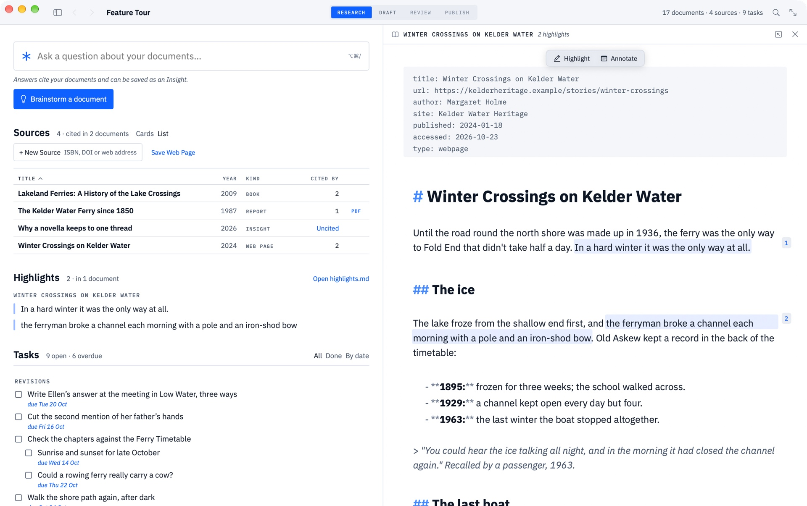
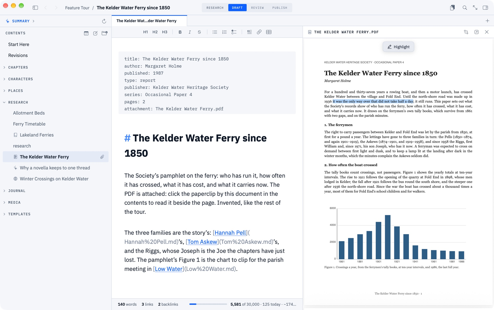
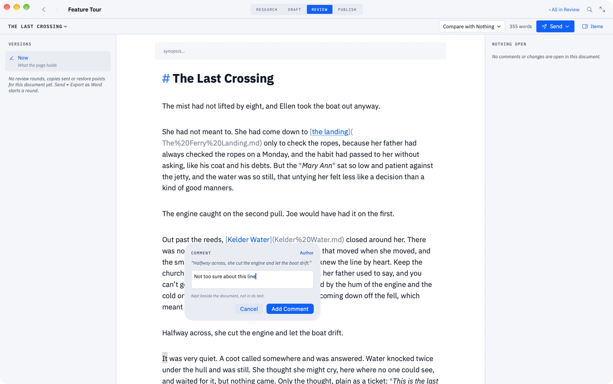
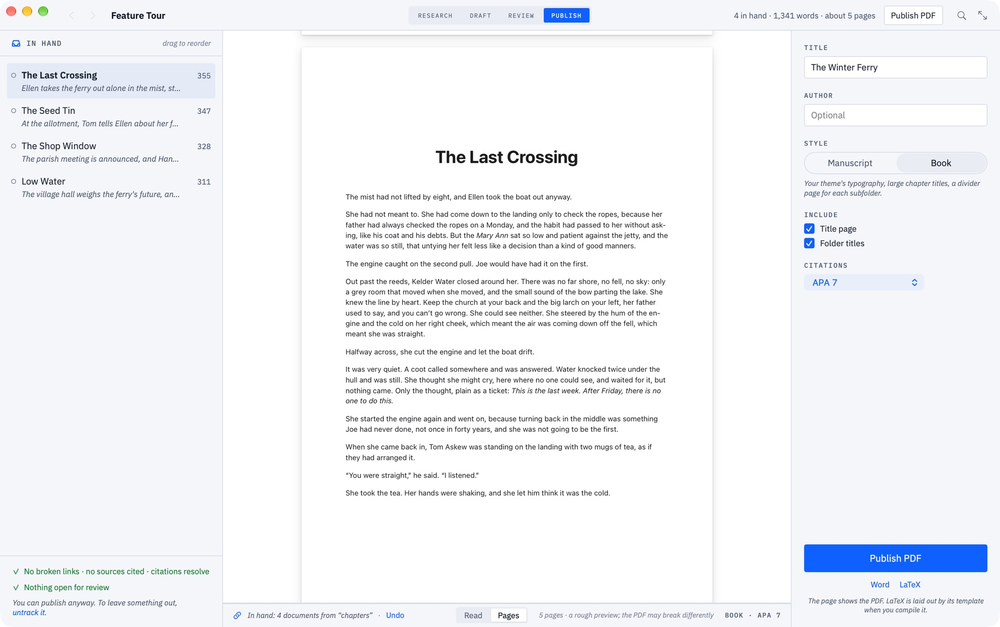
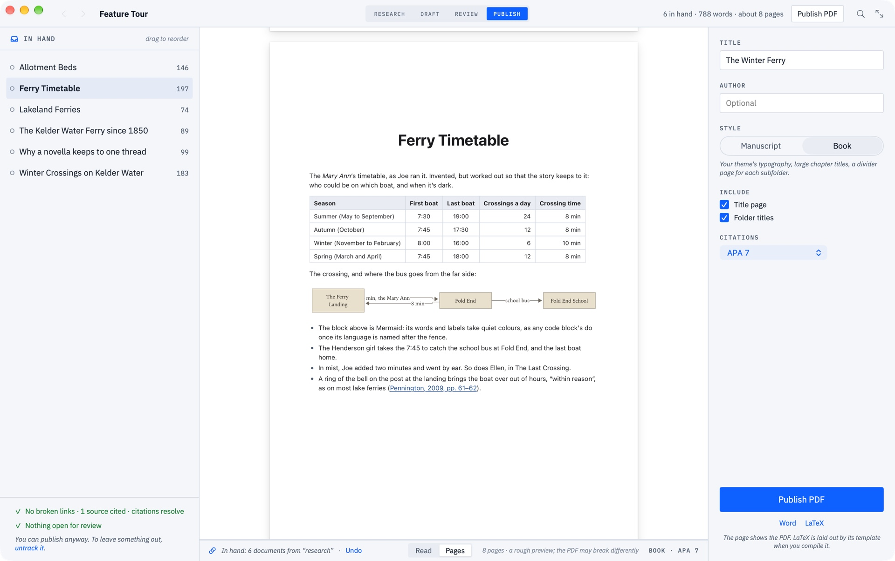
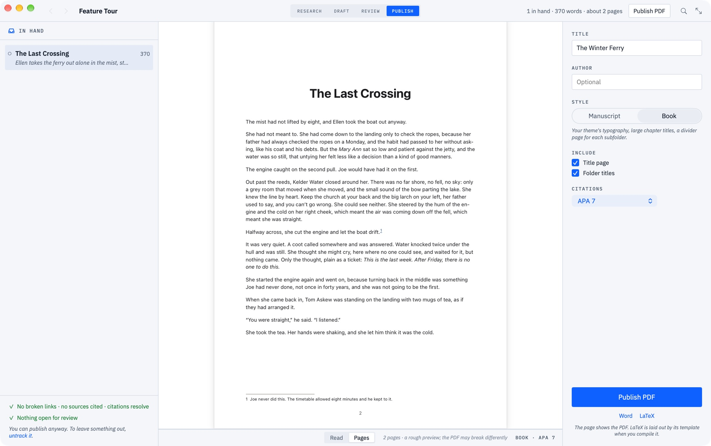

Step 1
Send.
Export a Word file from the Review screen. Your open comments go with it.
Grasmere is a Mac app for long writing projects in Markdown. Research your subject and import your sources, draft your manuscript, review it with peers then publish it with all the right formatting & citations, to Word, PDF or the Web.
Try it free for 14 days. Then $14.99 forever.
There’s no subscription, no account and no proprietary formats. Just plain Markdown files on your Mac.
Make a plan for your project. Collect your research from websites, books and papers so you can cite it later. Bring together all your tasks in one list.



A pure Markdown writing experience, free from distraction. Find interesting links between your documents and brainstorm ideas with the on-device model.
Your reviewer uses Word. You stay in Markdown.

Export a Word file from the Review screen. Your open comments go with it.
In Word, Pages or Google Docs, with comments and tracked changes as usual. They don’t need Grasmere.
Drop the file back in. Every comment and change appears beside your text, ready to accept, reject or reply to. Changes you made in the meantime are kept.
Publish your manuscript in PDF or Word Doc, complete with citations and formatting. Publish your project as a website with one click.



No account, no analytics, no tracking. Grasmere has no server. Your documents are Markdown files in folders you choose.
Ask and Brainstorm use Apple’s on‑device model by default. They work offline and send nothing anywhere.
Brainstorm an essay, research or runbook. Grasmere asks you questions and you get the ball rolling.